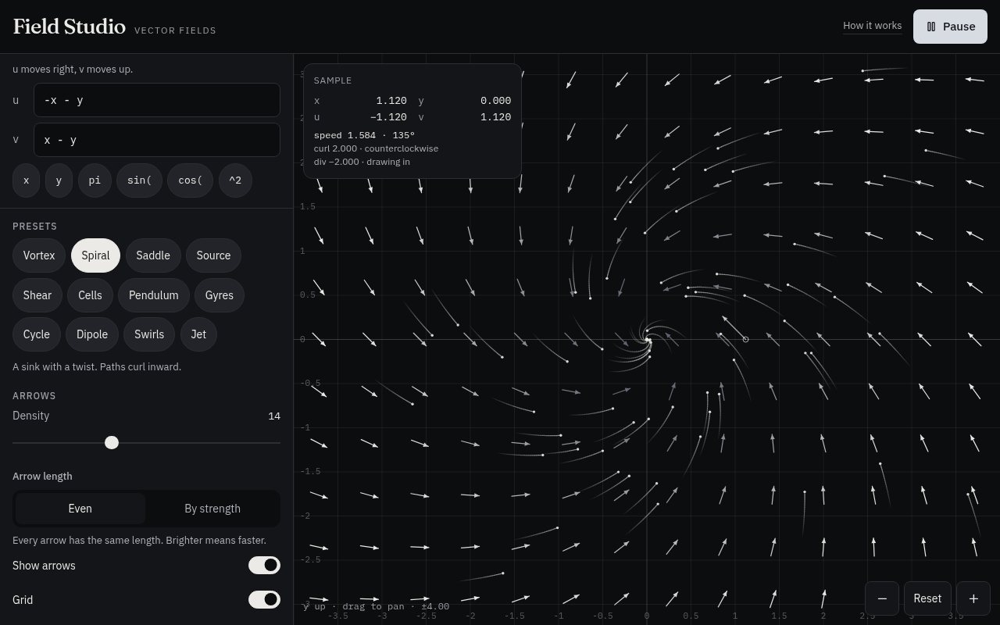
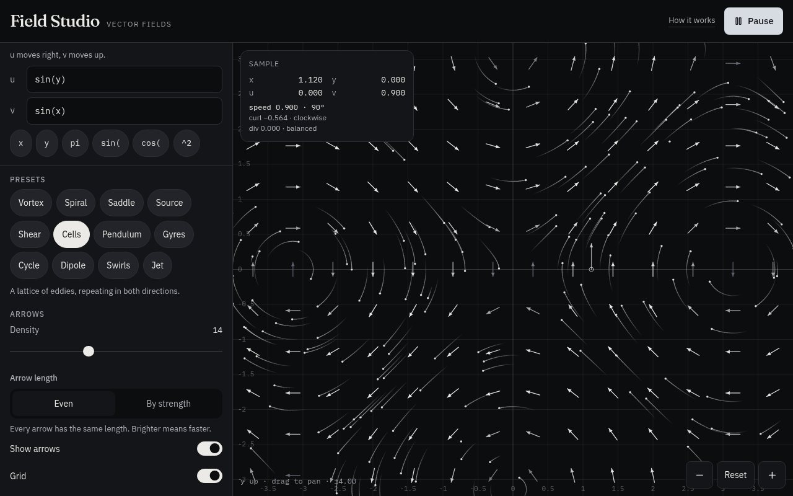
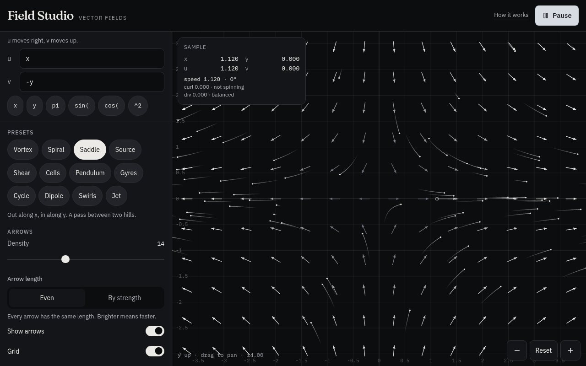
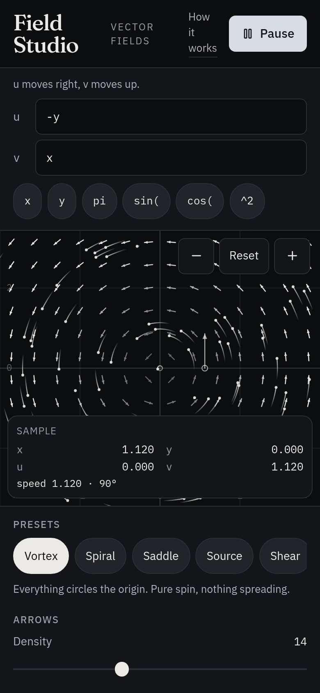

A free tool from Digital Underground
Field Studio
Type two short equations and watch a vector field appear. Arrows show which way things push at every point, and hundreds of particles drift along the flow.
Free, no sign-up, runs in your browser

What is a vector field?
Picture a map where every spot has a small arrow on it. The arrow tells you which way something would move if you dropped it there, and how hard it would be pushed. Wind on a weather map works like that, and so does water in a river or the pull around a magnet. That map of arrows is a vector field.
In Field Studio you describe it with two rules. u is how far an arrow points right (or left, if negative). v is how far it points up (or down). Both can depend on where you are, x and y. The tool works out the arrow at every point, draws the grid and sends particles riding along the flow, so you can see the shape at a glance.
Who it's for
Students
See what an equation from calculus, physics or differential equations actually looks like, and get a feel for sinks, sources, saddles and spirals.
Teachers
Put a live field on the projector, change one sign and show the class what happens. No accounts or installs, just a link.
Physics and math fans
Explore flows, curl and divergence. Pin any point to read the exact vector, its speed, and whether the flow spins or spreads there.
Creative coders
Use it as a sketchpad for flow-field art. Find patterns you like, then bring the equations into your own generative work.
Equations to try
Type these into the u and v boxes, or pick the matching preset.
Vortex
u = -y v = xEverything circles the centre counterclockwise, like water around a drain that never empties. Pure spin, no spreading.
Spiral sink
u = -x - y v = x - yA whirlpool. Particles curl inward and collect at the origin.
Saddle
u = x v = -yFlow comes in from above and below, then rushes out to the left and right, like a mountain pass between two peaks.
Cells
u = sin(y) v = sin(x)A repeating grid of little whirlpools that turn in alternating directions. It looks great as a backdrop for flow-field art.
Screenshots



The controls
- u and v
- The two equations. Use
x,y, + − * /,^for powers, parentheses, functions such as sin, cos, tan, exp, log, sqrt, abs, min, max and atan2, and the constants pi and e. If something doesn't parse, you get a plain-language hint and the last working field stays on screen. - Insert buttons
- Tap x, y, pi, sin(, cos( or ^2 to add it at the cursor in whichever equation you last used. Handy on phones.
- Presets
- Twelve ready-made fields, including vortex, spiral, saddle, source, shear, cells, pendulum, dipole and jet. Each one comes with a one-line explanation.
- Density
- How many arrows go across the grid.
- Arrow length
- Even draws every arrow the same length, so direction is easy to read. By strength makes stronger spots longer. Either way, brighter means faster.
- Show arrows / Grid
- Turn the arrows or the background grid with axis labels on and off.
- Speed
- How fast the particles move overall.
- Particles
- How many particles ride the flow, up to 220. The toggle hides them completely.
- Particle pace
- Steady moves every particle at the same pace so the shape stays clear. Field speed lets them rush where the field is strong and crawl where it is weak.
- Trails / Reseed
- Show fading trails behind each particle, or scatter all the particles again.
- Play / Pause
- Start or freeze the animation. The Space bar does the same.
- On the plot
- Hover to read the vector under the pointer, with its speed, direction, curl (spin) and divergence (spread). Click or tap to pin a point. Drag to pan, scroll or pinch to zoom, and use − / Reset / + in the corner.
Ready to see your own field?
Field Studio is free, with nothing to sign up for. It runs entirely in your browser and keeps your last field and settings on your own device.